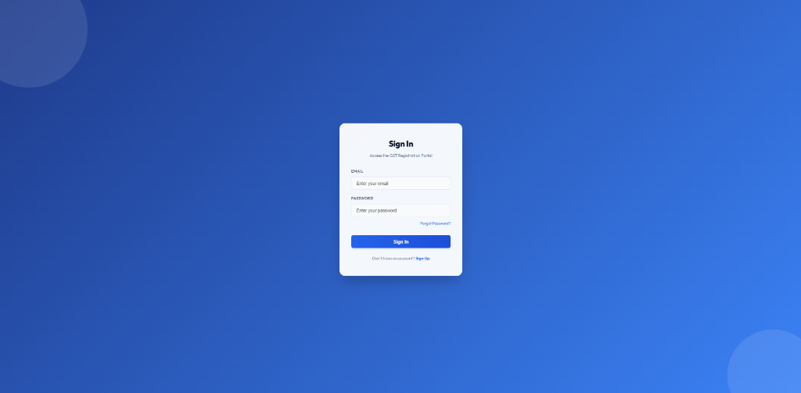
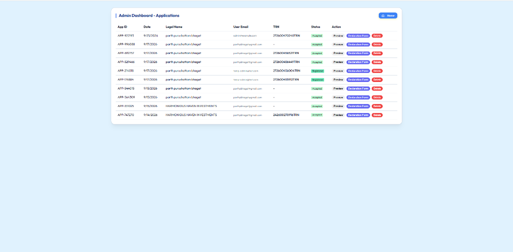
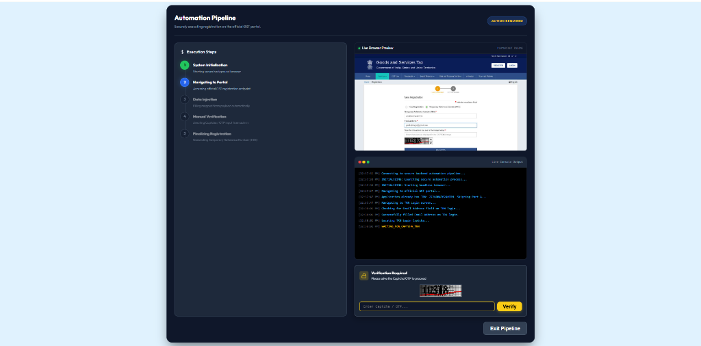
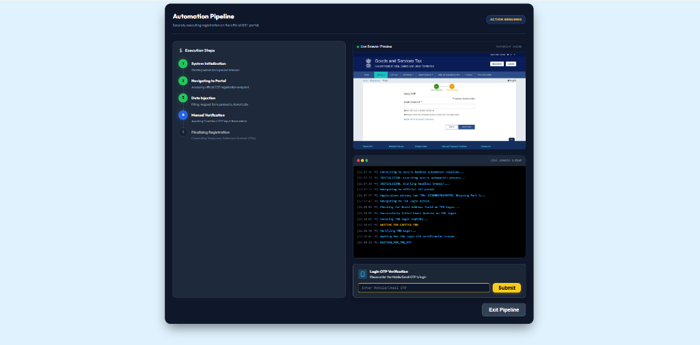

Good morning, everyone. Today, I want to talk about a critical bottleneck in financial compliance: the GST Registration process.
Every day, professionals spend countless hours manually typing sensitive client data into the government portal. It’s a process fraught with challenges: the portal is notoriously slow, sessions expire unexpectedly, and a single typo can lead to a rejected application. We are relying on highly skilled professionals to do repetitive data entry.
We asked ourselves: Why should human capital be wasted on tasks that machines can do perfectly?
The solution is the platform we are presenting today. We have built an end-to-end automation pipeline that bridges the gap between the client, the firm, and the official government portal. It ensures 100% data accuracy, eliminates manual entry, and dramatically reduces turnaround time.
It all starts with a seamless client experience. Instead of exchanging messy WhatsApp messages or unstructured emails, we provide clients with a clean, secure, and intuitive web portal.

Here, the client securely logs in and submits their details, PAN, Aadhaar, and business information. The data is validated instantly. We even generate an automated PDF declaration form for their signature, ensuring compliance from step one.
Once the client submits their data, it flows directly into our secure Administrator Dashboard. Let’s take a look.

As an administrator, I have a bird's-eye view of all pending applications. I don't need to hunt for documents; everything is organized. After reviewing the data, I simply click 'Proceed to Automation'. This is where the real magic happens.
Behind the scenes, our Node.js backend triggers a secure, headless browser instance using Playwright. Our software acts as a virtual assistant, navigating the official GST portal on our behalf.

Watch as the system automatically enters the applicant's PAN, Email, and Mobile number. It maps every single data point flawlessly. But what about security hurdles like CAPTCHA and OTPs? We've engineered a seamless handoff mechanism.

The system pauses and securely prompts the administrator to input the CAPTCHA or OTP. Once provided, the automation resumes instantly, finalizing the Part A registration and successfully generating the Temporary Reference Number (TRN). The TRN is then automatically saved back to our database and linked to the client's profile.
Let’s summarize what we’ve just witnessed. In a matter of minutes, we took unstructured client data, organized it, and automatically injected it into a complex government portal to generate a TRN.
This isn't just a software tool; it is a paradigm shift in how compliance firms operate. We are moving away from manual data entry and stepping into an era of intelligent, automated operations. We are not just saving time; we are elevating the standard of our professional services.
Thank you. I will now open the floor for any questions.